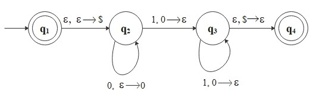

Context-Free Grammar (CFG)
A context-free grammar is a 4-tuple \((V, \Sigma, R, S)\);
- \(V\) is a finite set called the variables.
- \(\Sigma\) is a finite set disjoint from \(V\), called the terminals.
- \(R\) is a finite set of rules, with each rule being a variable and a string of variables and terminals.
- \(S \in V\) is the start variable.
Any language that can be generated by some context-free grammar is called a context-free language (CFL).
Example:
\[
\begin{align*}
&X \to 00X1 \, | \, Y01 \\\\
&Y \to $
\end{align*}
\]
In this grammar, \(V = \{X, Y\}, \, \Sigma = \{0, 1, $\}, \, S = X\), and \(R\) is the collection of above rules.
For example, this grammar generates the string \(0000$0111\). The derivation of the string in this grammar is
\[
X \Rightarrow 00X1 \Rightarrow 0000X11 \Rightarrow 0000Y0111 \Rightarrow 0000$0111.
\]
Note: \( X \to 00X1 \, | \, Y01\) means \( X \to 00X1\) OR \(X \to Y01\).
In general, context-free grammars are more powerful than regular expressions when
describing languages.
For example, CFG can describe recursive structures. Consider the language
\[
L_1 = \{0^n 1^n \, | \, n \geq 0\}
\]
This is a nonregular language. To prove a language is not regular, we use the pumping Lemma.
Pumping Lemma
Pumping Lemma:
If \(L\) is a regular language, then there exists \(p \in \mathbb{N}\) where if any string \(s \in L\) of
length at least \(p\), then \(s\) may be divided into three pieces, \(s = xyz\), satisfying the following conditions
- \(\forall i \geq 0, \, xy^i z \in L\)
- \(|y| > 0\)
- \(|xy| \leq p\)
Note: \(p\) is called the
pumping length,
For example, assume \(L_1\) is regular. Choose \(s\) to be the string \(0^p1^p\), where \(p\) is the pumping length. Then
\(s\) must be split into three pieces, \(s = xyz\), where for any \(i \geq 0\) the string \(xy^iz \in L_1\). If we pump \(y\),
the number of \(0\)s and \(1\)s become unequal, producing a string not in \(L_1\). (Check when \(y\) consists only of \(0\)s, only of \(1\)s, or
of both \(0\)s & \(1\)s). Thus, by contradiction, \(L_1\) is not regular.
However, we can represent \(L_1\) by the context-free grammar:
\[
s \to 0s1 \, | \, \epsilon.
\]
(e.g. \(s \Rightarrow 0s1 \Rightarrow 00s11 \Rightarrow 0011\))
Pushdown Automata
Here, we introduce a new type of computational model.
A pushdown automaton is a 6-tuple \((Q, \Sigma, \Gamma, \delta, q_0, F)\) where
- \(Q\) is a finite set of states,
- \(\Sigma\) is a finite set of the input alphabet,
- \(\Gamma\) is a finite set of the stack alphabet,
- \(\delta: Q \times \Sigma_{\epsilon} \times \Gamma_{\epsilon} \to \mathcal{P}(Q \times \Gamma_{\epsilon})\) is the transition function,
- \(q_0 \in Q\) is the start state,
- \(F \subseteq Q\) is the set of accept states.
Pushdown Automata(PDAs) are similar to the nondeterministic finite automata (NFAs), but have an
extra component called a stack, which allows pushdown automata recognize some nonregular languages.
Again, consider the language:
\[
L_1 = \{0^n 1^n \, | \, n \geq 0\}.
\]
The PDA, \(M_1\) reads symbols from the input string as follows:
- As each \(0\) is read, pushes it onto the stack.
- After reading the sequence of \(0\)s, pops a \(0\) off the stack for each \(1\) that is read.
- If reading the string is finished exactly when the stack becomes empty, accepts the string, otherwise rejects the input.
Let's build the state diagram for \(M_1\) that recognizes \(L_1\).
\[
\begin{align*}
&Q = \{q_1, q_2, q_3, q_4\} \\\\
&\Sigma = \{0, 1\} \\\\
&\Gamma = \{0, $\} \\\\
&F = \{q_1, q_4\}
\end{align*}
\]
Note: A special symbol \($\) is on the stack initially.

Here, for example, \(1, 0 \to \epsilon\) means that \(M_1\) is reading a \(1\) from the input string,
it may replace \(0\) on the top of the stack with \(\epsilon\).
CFGs and Pushdown Automata are equivalent. (We shall skip the proof.)
A language is context-free if and only if some pushdown automaton recognizes it.
Moreover, every regular language is context-free because every regular language
are recognized by a finite automaton and every finite automaton is automatically a pushdown automaton.
Non-Context-Free Languages
To show that if a language is context-free or not, we need new pumping lemma. This time, a string can be divided
into five pieces so that the 2nd and the 4th pieces may be repeated together and the resulting string still remains
in the language.
Pumping Lemma for Context-Free Languages:
If \(L\) is a context-free language, then there exists \(p \in \mathbb{N}\) where if any string \(s \in L\) of
length at least \(p\), then \(s\) may be divided into
five pieces, \(s = uvxyz\), satisfying the following conditions
- \(\forall i \geq 0, \, uv^ixy^i z \in L\)
- \(|vy| > 0\)
- \(|vxy| \leq p\)
Note: \(p\) is called the
pumping length,
Consider the language:
\[
L_2 = \{a^n b^n c^n \, | \, n \geq 0\}.
\]
This is NOT context-free language because roughly speaking, it requires two independent counts to be maintained simultaneously unlike \(L_1\).
(We can check two cases: 1. both \(v\) and \(y\) contain only one type of symbol, 2. either \(v\) or \(y\) contains more
than one type of symbol. In both case, resulting strings violate condition 1.)
This means it requires more computational power than a PDA such as a Turing machine to recognize it.
Deterministic Pushdown Automata (DPDAs)
Remember that in terms of language recognition power, deterministic finite automata(DFAs) and nondeterministic finite automata(NFA) are
equivalent. On the other hand, nondeterministic pushdown automata are more powerful than their deterministic pushdown automata. So, some context-free
languages are not recognizable by DPDAs. However, in practice, deterministic context-free languages (DCFLs) are preferred for the
design of parsers(syntax analyzer) in compilers for programming languages.
A deterministic pushdown automaton (DPDA) requires transition function:
\[
\delta: Q \times \Sigma_{\epsilon} \times \Gamma_{\epsilon} \to (Q \times \Gamma_{\epsilon}) \cup \{\emptyset\}
\]
which must satisfy the following condition:
\[
\forall q \in Q, \, a \in \Sigma, \, \text{ and } x \in \Gamma
\]
exactly one of the values
\[
\delta(q, a, x), \, \delta(q, a, \epsilon), \, \delta(q, \epsilon, x), \, \delta(q, \epsilon, \epsilon)
\]
is not \(\emptyset\).
So, in DPDAs, \(\epsilon\)-moves are allowed because DPDAs might have to read an input symbol without popping a stack symbol,
and vice versa.
- \(\delta(q, a, \epsilon)\): \(\epsilon\)-stack moves
- \(\delta(q, \epsilon, x)\): \(\epsilon\)-input moves
- \(\delta(q, \epsilon, \epsilon)\): \(\epsilon\)-input & stack moves
Note: In our examples, \(L_1\) is DCFL.